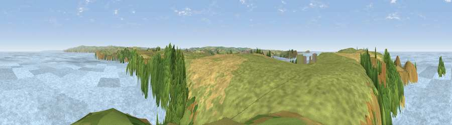

Viewpoint near New Polzeath
#4476 in England · top 13% of its area beats it · near New PolzeathThe view, rendered

A 360° render of this exact spot computed from the terrain model, tree cover and land cover — summer colours, afternoon light, calibrated against photographs of famous viewpoints. Real trees, hedges and buildings will differ in detail.
The panorama
Grey silhouette: terrain skyline in each direction (720 bearings, Earth curvature and refraction included). Dashed green: skyline with trees (+15 m) and buildings (+8 m) as obstacles. Blue strip: how far the ground is visible on each bearing.
Where the view opens
Wedge length = distance to the farthest visible ground on that bearing (vegetation-aware). Rings at 10, 25 and 50 km.
What fills the view
68% water · 19% grassland · 7% woodland · 6% cropland
Angular shares of the visible panorama (visual magnitude), not map area. Landscape diversity 0.41 (0–1 Shannon).
Key numbers
More beautiful places nearby
The staircase of upgrades: each row has a higher view potential than everything closer. Driving times are estimates from straight-line distance, calibrated against real road routing — check an actual route before setting out.
| Place | Direction | Drive | Score |
|---|---|---|---|
| Viewpoint near New Polzeath | WNW · 1 km | ~2 min | 75.8 |
| Viewpoint near Port Isaac | E · 3 km | ~8 min | 76.5 |
| Viewpoint near Port Isaac | ESE · 6 km | ~12 min | 77.8 |
| Viewpoint near Port Isaac | E · 9 km | ~17 min | 79.7 |
| Viewpoint near Boscastle | NE · 17 km | ~29 min | 82.0 |
| Viewpoint near Boscastle | ENE · 18 km | ~30 min | 84.3 |
| Viewpoint near Boscastle | ENE · 18 km | ~31 min | 85.2 |
| Viewpoint near Boscastle | NE · 22 km | ~37 min | 85.8 |
50.58712, -4.91186 · source: screening · position refined by local search. Computed location — check access rights before visiting.